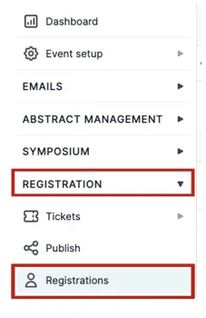
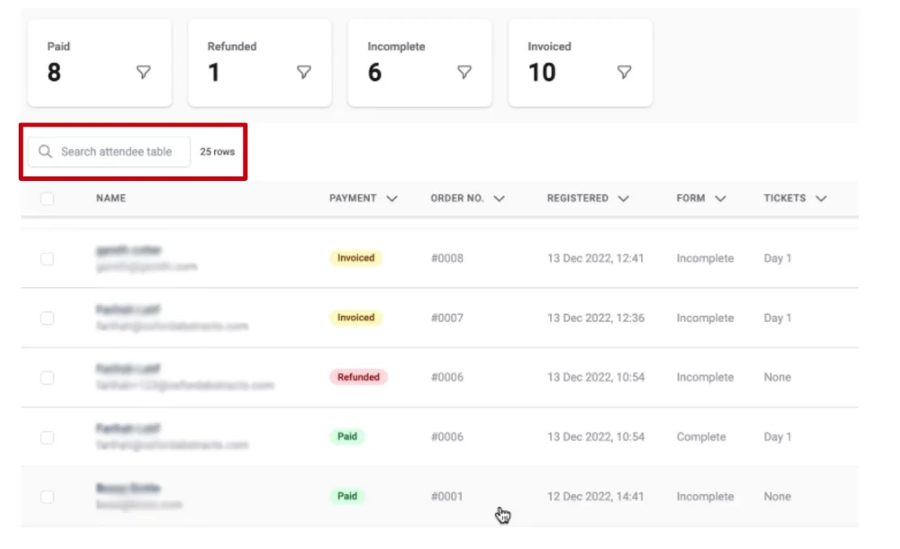
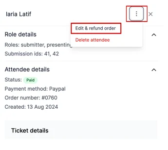
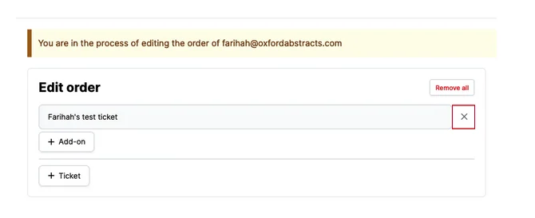
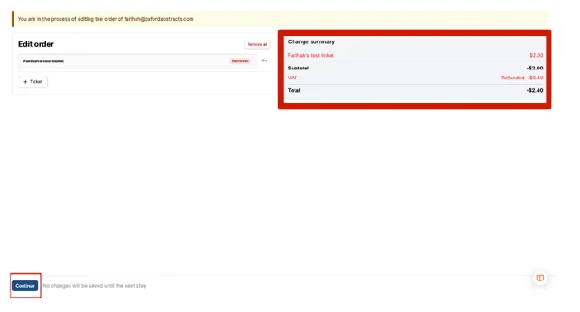
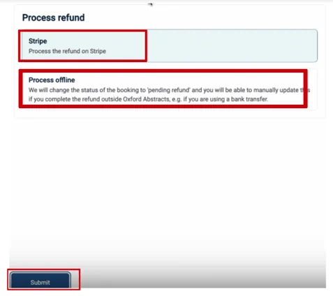
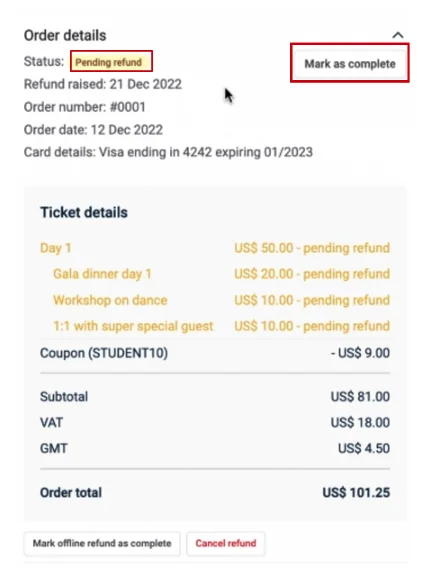
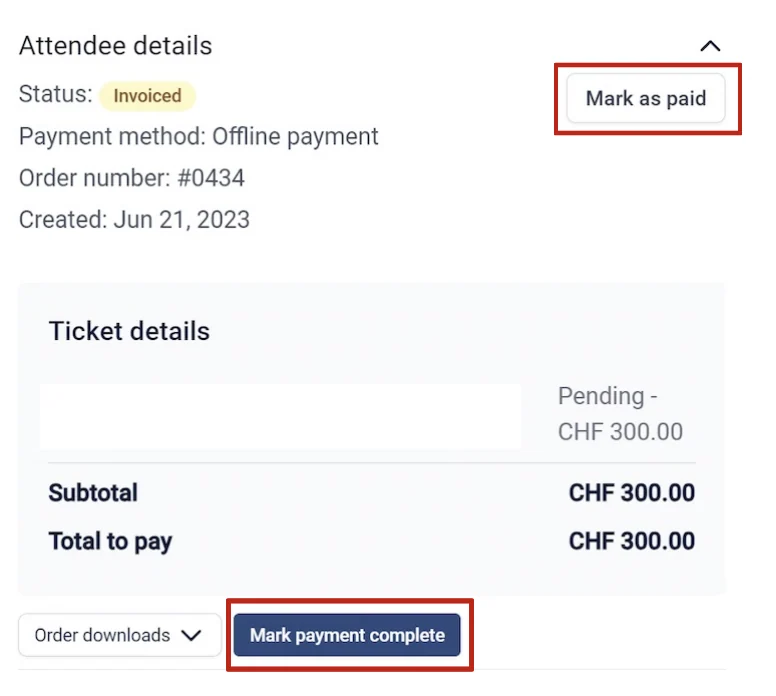

Refunding an attendee through delegate registration
Learn how to provide attendees with a refund.#
From your main dashboard, click on Registration → Registrations.

Find the person you want to be refunded by searching for their name in the search bar at the top of the page or scrolling through the table.

When you have found the name, click on it.
On the next screen, click the three dots to the top right of the pop up screen and click on Edit & Refund Order for the drop down menu.

On the next screen, select X button and then click the Continue button at the bottom of the screen.

On the right side of the screen you will see the Change Summary indicating the total refund amount.
From here, click the Continue button at the bottom left of the screen.

The refund itself is dependant upon they way the attendee purchased the ticket.
For example: if they paid via an invoice then you'll need to refund "offline" by bank transfer and then later mark the ticket as Refunded manually.
If the attendee paid through Stripe then you'll be able to refund automatically on Oxford Abstracts.
To get this to show as refunded on the Oxford Abstracts software you will need to click Process Offline (see screenshot below), and then manually update it once the refund has been processed on PayPal.
Select the option you wish to choose and click the Submit button at the bottom of the page.

On the next screen, the status will appear as ‘pending’ until you have sent the money. You can mark this as complete via the button to the top right of the screen when you have done this.

"Mark payment complete" appears when a delegate originally chose to pay with payment link but you needs to mark it as paid because the delegate actually paid offline. This option requires card details to be added.

Before you refund, three things to know#
Refunding cancels their place. A refund and a cancellation are the same action — there is no way to return the money and leave the ticket active. If somebody should still attend after being refunded (a speaker being comped, for example), refund them first and then give them access as an invited user. See Controlling access to the programme.
The fees are not returned. The delegate gets the full amount back, but neither the payment provider's fee nor the Oxford Abstracts service fee is refunded, so you absorb both. If you expect cancellations, it is worth putting a cancellation fee in your terms and saying so on the invoice.
Partial refunds are not supported. You can only remove a whole ticket or add-on from an order. To refund part of what somebody paid — a 50% cancellation policy, or a discount code they should have used but didn't — do it in two steps: refund the original order in full, then create a ticket at the reduced price, visible to admins only, and add them to it.
If you refunded outside Oxford Abstracts#
If you issued the refund directly in Stripe or Authorize.net, the attendee table will still show them as paid. Do not refund them again here — that would send the money twice. Contact support with the attendee and the date, and the status can be corrected for you.
Refunds usually take five to ten days to reach the payer's statement. Refunded amounts are excluded from the gross total on the transactions page.
Should you require any further assistance, please contact our help desk via our contact form.
Didn't solve it? Ask our support team
No question is too small, and there's no charge for asking. Raise a ticket and someone who knows the software will pick it up.
Did this page solve it?
Thanks — this helps us fix it.